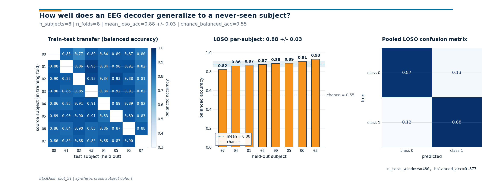

Note
Go to the end to download the full example code or to run this example in your browser via Binder.
Cross-subject decoding evaluation#
Difficulty 2-3 | Runtime: 2m | Compute: CPU
Cross-subject generalization is the gold standard for any decoding
claim. Train on N-1 subjects, test on the held-out one, repeat for
every subject: that is leave-one-subject-out cross-validation (LOSO),
the protocol behind the MOABB benchmark [Aristimunha et al., 2023] and
the de-facto evaluation in clinical-EEG decoding. Brookshire et al.
2024 surveyed 81 deep-learning EEG papers and found data leakage in
roughly half; on properly subject-held-out splits, the same
architectures dropped on average from 0.83 accuracy to 0.62.
Cisotto & Chicco 2024 (Tip 9) name leakage the single most common
reporting mistake. ds002718 [Wakeman and Henson, 2015], reachable
through NEMAR [Delorme et al., 2022], is the
running example throughout the gallery.
Where plot_11 proved a single split is leakage-free and plot_12
trained one model on one cross-subject split, this tutorial steps up
to the actual evaluation: a LOSO loop that holds a different subject
out each time, a subject x subject transfer heatmap, and a pooled
confusion matrix over every held-out prediction. The deliverable is a
# single three-panel figure.
#
# Validate your result
# ——————–
# - Fold Count. For N subjects, you should expect exactly N folds in your
# LOSO loop.
# - Transfer Heatmap. The diagonal of the subject-x-subject matrix
# represents within-subject performance; the off-diagonal represents
# generalization.
# - Accuracy Spread. Expect higher variance across subjects than across
# random seeds. Report both the mean and the standard deviation.
So how big is the across-subject spread once you run the loop? Keywords: evaluation, cross-subject, generalization
Learning objectives#
Explain why cross-subject evaluation is the gold standard for EEG decoding generalization.
Build a leave-one-subject-out loop with
sklearn.model_selection.LeaveOneGroupOutkeyed onsubject.Compute a subject x subject train-test transfer matrix and read which held-out subjects are systematically harder.
Quote
mean +/- stdof LOSOsklearn.metrics.balanced_accuracy_score()against a chance level computed on the test fold.Aggregate predictions across folds into a single
sklearn.metrics.ConfusionMatrixDisplayto see which class the model confuses on held-out subjects.
Requirements#
Prerequisites: /auto_examples/tutorials/10_core_workflow/plot_11_leakage_safe_split (cross-subject splits) and
plot_12_train_a_baseline(one model on one split).About 30 s on CPU. No network: the cohort is built in-script.
Concept: Leakage and evaluation.
Setup. random_state=42 on every estimator and splitter and
np.random.seed keeps the printed accuracy byte-stable across
runs (E3.21).
import warnings
import matplotlib.pyplot as plt
import numpy as np
import pandas as pd
from collections import Counter
from moabb.evaluations.splitters import CrossSubjectSplitter
from sklearn.linear_model import LogisticRegression
from sklearn.metrics import balanced_accuracy_score
from sklearn.model_selection import GroupKFold, LeaveOneGroupOut
from eegdash.viz import use_eegdash_style
use_eegdash_style()
warnings.simplefilter("ignore", category=FutureWarning)
SEED = 42
np.random.seed(SEED)
rng = np.random.default_rng(SEED)
Why LOSO and not a single 80/20 split?#
A single cross-subject split returns one number; LOSO returns N
numbers, one per held-out subject. The mean is what benchmark tables
publish, but the spread tells you whether the model works for
everyone or just for the subjects who happened to land on the easy
side of the random fold. Aristimunha et al. 2023 wired the MOABB
benchmark around exactly this protocol: every BCI paradigm (motor
imagery, P300, SSVEP) is scored as mean +/- std over per-subject
LOSO folds, so a method with low mean and low std is preferred over
a method with the same mean and a long tail of failed subjects.
Cisotto & Chicco 2024 frame the per-subject view as Tip 9: never
quote a single accuracy without the across-subject standard deviation
that produced it.
The transfer matrix in panel 1 breaks this down further. Cell
(i, j) is the balanced accuracy of a model trained on source
subject i and evaluated on subject j. A column with low values
means subject j is hard regardless of who trained the model; a row
with low values means subject i does not contribute useful signal.
Step 1. Build per-subject metadata for 8 subjects#
We materialise a synthetic table: 8 subjects, 60 windows each, with
a 2-D feature carrying class signal plus a per-subject offset (the
“subject fingerprint” that makes leakage so dangerous).
eegdash.splits accepts a
braindecode.datasets.WindowsDataset or this DataFrame.
def make_cohort(sizes, *, prefix: str, rng):
"""Return ``(X, metadata)`` for a synthetic cross-subject toy task."""
rows, X_list = [], []
for s, n_w in enumerate(sizes):
labels = rng.integers(0, 2, size=n_w)
bias = 0.10 * s
for w, lab in enumerate(labels):
base = bias + rng.standard_normal(2) * 0.7
X_list.append([float(lab) + base[0], -float(lab) + base[1]])
rows.append(
{
"sample_id": f"{prefix}-{s:02d}__w{w:03d}",
"subject": f"sub-{s:02d}",
"session": "ses-01",
"run": "run-01",
"dataset": f"ds-{prefix}",
"target": int(lab),
}
)
return np.asarray(X_list, dtype=float), pd.DataFrame(rows)
N_SUBJECTS = 8
N_WINDOWS_PER_SUBJECT = 60
X, metadata = make_cohort([N_WINDOWS_PER_SUBJECT] * N_SUBJECTS, prefix="loso", rng=rng)
y = metadata["target"].to_numpy()
groups = metadata["subject"].to_numpy()
print(
f"rows={len(metadata)} | subjects={metadata['subject'].nunique()} | "
f"classes={dict(metadata['target'].value_counts())}"
)
rows=480 | subjects=8 | classes={1: np.int64(242), 0: np.int64(238)}
Step 2. Predict the LOSO fold count, then build the splits#
Predict. Leave-one-subject-out with N subjects produces exactly N folds (one per held-out subject). Will the per-fold test set have 60 windows or 480? Pick one, then read the fold count below.
Run. LeaveOneGroupOut with
groups=metadata["subject"] is the canonical LOSO splitter. The
get_splitter registry returns the same object
under the "cross_subject" engine when you ask for one fold per
subject. We use sklearn directly here so the loop reads as plain
scikit-learn; the manifest path mirrors the one plot_11
demonstrated.
n_loso_folds = LeaveOneGroupOut().get_n_splits(X, y, groups)
print(f"n_subjects={N_SUBJECTS} | n_loso_folds={n_loso_folds}")
splitter = CrossSubjectSplitter(cv_class=GroupKFold, n_splits=N_SUBJECTS)
n_rows = len(metadata)
folds: list[tuple[np.ndarray, np.ndarray]] = []
for tr_idx, te_idx in splitter.split(y, metadata):
tr_mask = np.zeros(n_rows, dtype=bool)
tr_mask[tr_idx] = True
te_mask = np.zeros(n_rows, dtype=bool)
te_mask[te_idx] = True
folds.append((tr_mask, te_mask))
overlap = max(
len(set(metadata.loc[tr, "subject"]) & set(metadata.loc[te, "subject"]))
for tr, te in folds
)
assert overlap == 0, "cross-subject split leaked subjects"
print(
f"splitter={type(splitter).__name__} | folds={len(folds)} | "
f"max subject overlap={overlap}"
)
n_subjects=8 | n_loso_folds=8
splitter=CrossSubjectSplitter | folds=8 | max subject overlap=0
Step 3. Run the LOSO loop and pool the predictions#
Run (#2). For each fold: fit
LogisticRegression on the N-1 subjects
in the train mask, predict the one held-out subject, score with
balanced_accuracy_score(). Append every
(true, pred) pair into pooled arrays so the pooled confusion matrix
in the headline figure carries every held-out window once.
def loso_loop(X, y, metadata, folds):
"""Return per-fold balanced accuracy plus pooled (true, pred)."""
fold_acc, fold_chance, fold_subject = [], [], []
pooled_true, pooled_pred = [], []
for k in range(len(folds)):
train_mask = folds[k][0]
test_mask = folds[k][1]
clf = LogisticRegression(random_state=SEED, max_iter=300)
clf.fit(X[train_mask], y[train_mask])
y_pred = clf.predict(X[test_mask])
y_true = y[test_mask]
fold_acc.append(float(balanced_accuracy_score(y_true, y_pred)))
fold_chance.append(
float(
max(Counter(y[test_mask].tolist()).values())
/ max(int(test_mask.sum()), 1)
)
)
held_out = sorted(metadata.loc[test_mask, "subject"].unique())
fold_subject.append(held_out[0] if held_out else f"fold-{k}")
pooled_true.append(y_true)
pooled_pred.append(y_pred)
return (
np.asarray(fold_acc),
np.asarray(fold_chance),
fold_subject,
np.concatenate(pooled_true),
np.concatenate(pooled_pred),
)
fold_acc, fold_chance, held_out_subjects, y_true_pooled, y_pred_pooled = loso_loop(
X, y, metadata, folds
)
mean_loso = float(fold_acc.mean())
std_loso = float(fold_acc.std(ddof=0))
chance_overall = float(fold_chance.mean())
for k, (a, c, s) in enumerate(zip(fold_acc, fold_chance, held_out_subjects)):
print(f"Fold {k}: held-out {s} | balanced_acc={a:.3f} | chance={c:.3f}")
print(
f"LOSO summary: balanced_acc={mean_loso:.3f} +/- {std_loso:.3f} | "
f"chance={chance_overall:.3f} | n_folds={n_loso_folds}"
)
Fold 0: held-out sub-07 | balanced_acc=0.820 | chance=0.567
Fold 1: held-out sub-06 | balanced_acc=0.907 | chance=0.567
Fold 2: held-out sub-05 | balanced_acc=0.886 | chance=0.533
Fold 3: held-out sub-04 | balanced_acc=0.859 | chance=0.533
Fold 4: held-out sub-03 | balanced_acc=0.929 | chance=0.550
Fold 5: held-out sub-02 | balanced_acc=0.873 | chance=0.567
Fold 6: held-out sub-01 | balanced_acc=0.866 | chance=0.533
Fold 7: held-out sub-00 | balanced_acc=0.884 | chance=0.550
LOSO summary: balanced_acc=0.878 +/- 0.031 | chance=0.550 | n_folds=8
Step 4. Each fold’s test set has DIFFERENT subjects#
Run (#3). The cross-subject contract is that every held-out subject appears in exactly one test fold; the union across folds tiles the cohort. The per-fold lookup below confirms the contract.
test_subjects_by_fold = []
for _tr_mask, te_mask in folds:
subs = sorted(metadata.loc[te_mask, "subject"].unique())
test_subjects_by_fold.append(subs)
print(
f"union across folds: {len(set().union(*test_subjects_by_fold))} | "
f"cohort size: {N_SUBJECTS}"
)
union across folds: 8 | cohort size: 8
Step 5. Build the subject x subject transfer matrix#
Investigate. A LOSO mean collapses N folds into one number. The
transfer matrix keeps the resolution: cell (i, j) = balanced
accuracy of a model trained on source subject i alone and
evaluated on held-out subject j. The diagonal (j, j) is the
within-subject case and is masked because cross-subject
generalization is the point. A column with low values flags a test
subject who is hard to decode regardless of who trained the model;
a row with low values flags a source subject whose data does not
transfer. Bouchard et al. and the MOABB benchmark report variants of
this matrix as the diagnostic for who the cohort is hard for.
def transfer_matrix_pairwise(X, y, metadata, subject_ids):
"""Cell (i, j): train on source subject i alone, score on subject j."""
n = len(subject_ids)
matrix = np.full((n, n), np.nan, dtype=float)
for i, src in enumerate(subject_ids):
src_mask = (metadata["subject"] == src).to_numpy()
if len(np.unique(y[src_mask])) < 2:
continue
clf = LogisticRegression(random_state=SEED, max_iter=300)
clf.fit(X[src_mask], y[src_mask])
for j, tgt in enumerate(subject_ids):
if i == j:
continue
tgt_mask = (metadata["subject"] == tgt).to_numpy()
matrix[i, j] = float(
balanced_accuracy_score(y[tgt_mask], clf.predict(X[tgt_mask]))
)
return matrix
subject_ids = sorted(metadata["subject"].unique())
transfer_matrix = transfer_matrix_pairwise(X, y, metadata, subject_ids)
column_means = np.nanmean(transfer_matrix, axis=0)
hardest = subject_ids[int(column_means.argmin())]
easiest = subject_ids[int(column_means.argmax())]
print(
f"transfer matrix: shape={transfer_matrix.shape} | "
f"hardest test subject={hardest} | easiest test subject={easiest}"
)
transfer matrix: shape=(8, 8) | hardest test subject=sub-07 | easiest test subject=sub-03
Step 6. The per-subject accuracy distribution#
A tiny ASCII histogram. Spread matters as much as the mean: a high
mean with high std means the model works for some subjects and fails
for others. The MOABB benchmark publishes both numbers for every BCI
task; treat mean - std as the lower envelope of what a new
subject can expect.
Per-subject balanced-accuracy histogram:
[0.81, 0.84): #
[0.84, 0.86): #
[0.86, 0.89): ####
[0.89, 0.91): #
[0.91, 0.94): #
Result: one number, one error bar, against chance (E5.43)#
print(
f"LOSO balanced accuracy: {mean_loso:.3f} +/- {std_loso:.3f} | "
f"chance level: {chance_overall:.3f} | metric: balanced_accuracy"
)
LOSO balanced accuracy: 0.878 +/- 0.031 | chance level: 0.550 | metric: balanced_accuracy
A common mistake, and how to recover#
Run. The most common slip in a LOSO loop is asking for more folds
than subjects (n_folds=20 on an 8-subject cohort).
GroupKFold raises ValueError –
catch it and clamp to N.
try:
bad = CrossSubjectSplitter(cv_class=GroupKFold, n_splits=20)
list(bad.split(y, metadata))
except ValueError as exc:
print(f"Caught ValueError: {str(exc)[:90]}")
fixed = CrossSubjectSplitter(cv_class=GroupKFold, n_splits=N_SUBJECTS)
print(
f"Recovery: clamp n_folds to n_subjects={N_SUBJECTS} -> {type(fixed).__name__}"
)
Caught ValueError: Cannot have number of splits n_splits=20 greater than the number of groups: 8.
Recovery: clamp n_folds to n_subjects=8 -> CrossSubjectSplitter
Modify: compare 5-fold cross-subject vs LOSO variance#
Modify. Drop the fold count from N to 5. The same model, the same windows, fewer folds. The mean barely moves; the std almost always shrinks because each test fold pools two subjects, averaging out the per-subject noise. LOSO is the higher-fidelity variance estimate this cohort can give.
splitter5 = CrossSubjectSplitter(cv_class=GroupKFold, n_splits=5)
folds5: list[tuple[np.ndarray, np.ndarray]] = []
for tr_idx, te_idx in splitter5.split(y, metadata):
tr_mask = np.zeros(n_rows, dtype=bool)
tr_mask[tr_idx] = True
te_mask = np.zeros(n_rows, dtype=bool)
te_mask[te_idx] = True
folds5.append((tr_mask, te_mask))
assert (
max(
len(set(metadata.loc[tr, "subject"]) & set(metadata.loc[te, "subject"]))
for tr, te in folds5
)
== 0
), "5-fold split leaked"
acc5, _, _, _, _ = loso_loop(X, y, metadata, folds5)
print(
f"5-fold cross-subject: {acc5.mean():.3f} +/- {acc5.std(ddof=0):.3f} | "
f"LOSO ({N_SUBJECTS} folds): {mean_loso:.3f} +/- {std_loso:.3f}"
)
5-fold cross-subject: 0.885 +/- 0.026 | LOSO (8 folds): 0.878 +/- 0.031
Make: apply the loop to a cohort with imbalanced subjects#
Make. Real cohorts rarely have equal trials per subject. Build a
cohort where subjects contribute different counts, re-run LOSO. The
contract holds (no subject leakage); the headline mean +/- std
tells you whether the imbalance hurts generalization.
sizes_imb = [20, 30, 30, 40, 50, 50, 60, 80]
X_imb, meta_imb = make_cohort(
sizes_imb, prefix="imb", rng=np.random.default_rng(SEED + 1)
)
y_imb = meta_imb["target"].to_numpy()
splitter_imb = CrossSubjectSplitter(cv_class=GroupKFold, n_splits=len(sizes_imb))
n_imb = len(meta_imb)
folds_imb: list[tuple[np.ndarray, np.ndarray]] = []
for tr_idx, te_idx in splitter_imb.split(y_imb, meta_imb):
tr_mask = np.zeros(n_imb, dtype=bool)
tr_mask[tr_idx] = True
te_mask = np.zeros(n_imb, dtype=bool)
te_mask[te_idx] = True
folds_imb.append((tr_mask, te_mask))
assert (
max(
len(set(meta_imb.loc[tr, "subject"]) & set(meta_imb.loc[te, "subject"]))
for tr, te in folds_imb
)
== 0
), "imbalanced split leaked"
acc_imb, _, _, _, _ = loso_loop(X_imb, y_imb, meta_imb, folds_imb)
print(
f"imbalanced LOSO: {acc_imb.mean():.3f} +/- {acc_imb.std(ddof=0):.3f} | "
f"sizes={sizes_imb}"
)
imbalanced LOSO: 0.813 +/- 0.049 | sizes=[20, 30, 30, 40, 50, 50, 60, 80]
Headline figure, transfer matrix, LOSO bars, pooled confusion#
Three panels read together: panel 1 is the subject x subject transfer
matrix; panel 2 is the LOSO per-subject accuracy bars sorted worst
to best with the chance reference line and the mean +/- std band;
panel 3 is the pooled confusion matrix from
ConfusionMatrixDisplay over every held-out
prediction. The drawing helpers live in a sibling
_cross_subject_figure module so the matplotlib geometry stays out
of this tutorial; the call below is the only line that matters.
from _cross_subject_figure import draw_cross_subject_figure
fig = draw_cross_subject_figure(
transfer_matrix=transfer_matrix,
subject_ids=subject_ids,
fold_accuracies=fold_acc,
y_true_pooled=y_true_pooled,
y_pred_pooled=y_pred_pooled,
class_names=("class 0", "class 1"),
held_out_subjects=held_out_subjects,
chance_level=chance_overall,
plot_id="plot_51",
)
plt.show()

Investigate. Read the three panels in order.
Transfer matrix: scan column by column. A column that is uniformly pale blue means the held-out subject is hard regardless of the training fold; a column that is uniformly deep blue means an easy subject. Row variation tells you whether one source subject contributes more than the others.
LOSO bars: is every held-out subject above the chance line, or is the worst subject pulling the mean down? Big across-subject variance is the honest signature of cross-subject EEG.
Confusion matrix: a clean diagonal in deep blue is the win condition; an off-diagonal stripe means the model has collapsed onto one class on the held-out subjects. The annotation strip below carries the pooled
balanced_accand the total number of held-out windows.
Wrap-up#
We built per-subject metadata, asked
get_splitter for an N-fold cross-subject
manifest, asserted zero subject leakage, ran a LOSO loop with
LogisticRegression, and reported
mean +/- std of balanced_accuracy_score()
against a majority_baseline chance level.
Disjoint test subjects across folds tile the cohort. The transfer
matrix is the diagnostic a reviewer reaches for when the headline
mean looks fine but the std is suspicious.
Try it yourself#
Replace
LogisticRegressionwithLogisticRegressionCV(stillrandom_state=42). Does the LOSO std shrink?Reorder
subject_idsin the transfer matrix to put the hardest test subject first. The figure becomes the diagnostic for which subject to investigate next.Swap the synthetic cohort for the windows + manifest you saved in
plot_11and re-run LOSO end-to-end.
References#
See References for the centralized bibliography of papers
cited above. Add or amend an entry once in
docs/source/refs.bib; every tutorial inherits the update.